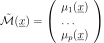
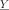
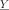

GeneralLinearModelResult¶
-
class
GeneralLinearModelResult(*args)¶ Generalized linear model result.
- Available constructors:
GeneralLinearModelResult(inputSample, outputSample, metaModel, residuals, relativeErrors, basis, trendCoefficients, covarianceModel, optimalLogLikelihood)
GeneralLinearModelResult(inputSample, outputSample, metaModel, residuals, relativeErrors, basis, trendCoefficients, covarianceModel, covarianceCholeskyFactor, covarianceHMatrix, optimalLogLikelihood)
Parameters: inputSample, outputSample :
SampleThe samples
 and
and  .
.metaModel :
FunctionThe meta model: , defined in :eq:’metaModel’.
residuals :
PointThe residual errors.
relativeErrors :
PointThe relative errors.
basis : collection of
BasisCollection of the
 functional basis: for each .
Its size should be equal to zero if the trend is not estimated.
functional basis: for each .
Its size should be equal to zero if the trend is not estimated.trendCoefficients : collection of
PointThe trend coefficients vectors
 .
.covarianceModel :
CovarianceModelCovariance function of the Gaussian process with its optimized parameters.
covarianceCholeskyFactor :
TriangularMatrixThe Cholesky factor
 of
of  .
.covarianceHMatrix :
HMatrixThe hmat implementation of
.optimalLogLikelihood : float
The maximum log-likelihood corresponding to the model.
Notes
The structure is usually created by the method run() of a
GeneralLinearModelAlgorithm, and obtained thanks to the getResult() method.The meta model is defined by:
(1)¶
where and
 are the trend functions.
are the trend functions.If a normalizing transformation T has been used, the meta model is built on the inputs and the meta model writes:
(2)¶
Examples
Create the model and the samples:
>>> import openturns as ot >>> f = ot.SymbolicFunction(['x'], ['x * sin(x)']) >>> sampleX = [[1.0], [2.0], [3.0], [4.0], [5.0], [6.0]] >>> sampleY = f(sampleX)
Create the algorithm:
>>> basis = ot.Basis([ot.SymbolicFunction(['x'], ['x']), ot.SymbolicFunction(['x'], ['x^2'])]) >>> covarianceModel = ot.GeneralizedExponential([2.0], 2.0) >>> algo = ot.GeneralLinearModelAlgorithm(sampleX, sampleY, covarianceModel, basis) >>> algo.run()
Get the result:
>>> result = algo.getResult()
Get the meta model:
>>> metaModel = result.getMetaModel() >>> graph = metaModel.draw(0.0, 7.0) >>> cloud = ot.Cloud(sampleX, sampleY) >>> cloud.setPointStyle('fcircle') >>> graph = ot.Graph() >>> graph.add(cloud) >>> graph.add(f.draw(0.0, 7.0)) >>> graph.setColors(['black', 'blue', 'red'])
Methods
getBasisCollection()Accessor to the collection of basis. getClassName()Accessor to the object’s name. getCovarianceModel()Accessor to the covariance model. getId()Accessor to the object’s id. getMetaModel()Accessor to the metamodel. getModel()Accessor to the model. getName()Accessor to the object’s name. getNoise()Accessor to the Gaussian process. getOptimalLogLikelihood()Accessor to the optimal log-likelihood of the model. getRelativeErrors()Accessor to the relative errors. getResiduals()Accessor to the residuals. getShadowedId()Accessor to the object’s shadowed id. getTransformation()Accessor to the normalizing transformation. getTrendCoefficients()Accessor to the trend coefficients. getVisibility()Accessor to the object’s visibility state. hasName()Test if the object is named. hasVisibleName()Test if the object has a distinguishable name. setMetaModel(metaModel)Accessor to the metamodel. setModel(model)Accessor to the model. setName(name)Accessor to the object’s name. setRelativeErrors(relativeErrors)Accessor to the relative errors. setResiduals(residuals)Accessor to the residuals. setShadowedId(id)Accessor to the object’s shadowed id. setTransformation(transformation)Set accessor to the normalizing transformation. setVisibility(visible)Accessor to the object’s visibility state. -
__init__(*args)¶ x.__init__(…) initializes x; see help(type(x)) for signature
-
getBasisCollection()¶ Accessor to the collection of basis.
Returns: basisCollection : collection of
BasisCollection of the
function basis: for each .Notes
If the trend is not estimated, the collection is empty.
-
getClassName()¶ Accessor to the object’s name.
Returns: class_name : str
The object class name (object.__class__.__name__).
-
getCovarianceModel()¶ Accessor to the covariance model.
Returns: covModel :
CovarianceModelThe covariance model of the Gaussian process W.
-
getId()¶ Accessor to the object’s id.
Returns: id : int
Internal unique identifier.
-
getModel()¶ Accessor to the model.
Returns: model :
FunctionPhysical model approximated by a metamodel.
-
getName()¶ Accessor to the object’s name.
Returns: name : str
The name of the object.
-
getNoise()¶ Accessor to the Gaussian process.
Returns: process :
ProcessReturns the Gaussian process with the optimized parameters.
-
getOptimalLogLikelihood()¶ Accessor to the optimal log-likelihood of the model.
Returns: optimalLogLikelihood : float
The value of the log-likelihood corresponding to the model.
-
getRelativeErrors()¶ Accessor to the relative errors.
Returns: relativeErrors :
PointThe relative errors defined as follows for each output of the model:
 with  the vector of the
with  the vector of the  model’s values
and
model’s values
and  the metamodel’s values.
the metamodel’s values.
-
getResiduals()¶ Accessor to the residuals.
Returns: residuals :
PointThe residual values defined as follows for each output of the model:
 with the model’s values and the
metamodel’s values.
with the model’s values and the
metamodel’s values.
-
getShadowedId()¶ Accessor to the object’s shadowed id.
Returns: id : int
Internal unique identifier.
-
getTransformation()¶ Accessor to the normalizing transformation.
Returns: transformation :
FunctionThe transformation T that normalizes the input sample.
-
getTrendCoefficients()¶ Accessor to the trend coefficients.
Returns: trendCoef : collection of
PointThe trend coefficients vectors
-
getVisibility()¶ Accessor to the object’s visibility state.
Returns: visible : bool
Visibility flag.
-
hasName()¶ Test if the object is named.
Returns: hasName : bool
True if the name is not empty.
-
hasVisibleName()¶ Test if the object has a distinguishable name.
Returns: hasVisibleName : bool
True if the name is not empty and not the default one.
-
setModel(model)¶ Accessor to the model.
Parameters: model :
FunctionPhysical model approximated by a metamodel.
-
setName(name)¶ Accessor to the object’s name.
Parameters: name : str
The name of the object.
-
setRelativeErrors(relativeErrors)¶ Accessor to the relative errors.
Parameters: relativeErrors : sequence of float
The relative errors defined as follows for each output of the model:
with the vector of the model’s values
and the metamodel’s values.
-
setResiduals(residuals)¶ Accessor to the residuals.
Parameters: residuals : sequence of float
The residual values defined as follows for each output of the model:
with the model’s values and the
metamodel’s values.
-
setShadowedId(id)¶ Accessor to the object’s shadowed id.
Parameters: id : int
Internal unique identifier.
-
setTransformation(transformation)¶ Set accessor to the normalizing transformation.
Parameters: transformation :
FunctionThe transformation T that normalizes the input sample.
-
setVisibility(visible)¶ Accessor to the object’s visibility state.
Parameters: visible : bool
Visibility flag.